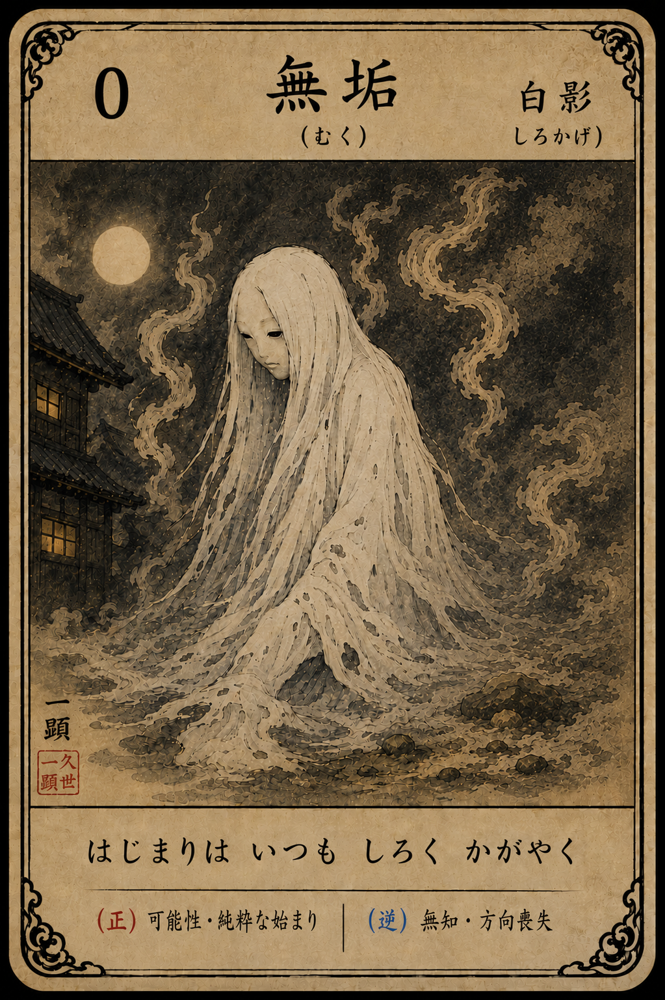
0 無垢
陽：可能性・純粋な始まり
陰：無知・迷走
まだ何も決まっていないからこそ、どこへでも向かうことができる状態を象徴します。 先入観を手放し、小さな一歩を踏み出すときに現れる札です。 一方で、準備や経験が足りないまま進めば、方向を見失うこともあります。
YOKAI NIJUNI EZU
二十二の妖怪は、それぞれ異なる心の動きや人生の局面を映し出します。
「妖怪二十二絵図占術」には、0番から21番まで二十二枚の妖怪札があります。 一枚一枚は単なる吉凶を示すものではなく、始まり、選択、忍耐、変化、迷い、希望、完成など、 人が日々の暮らしの中で経験するさまざまな状態を象徴しています。
それぞれの札には「陽」と「陰」の二つの側面があります。 陽は、その妖怪が持つ力が自然に働いている状態。 陰は、その力が偏ったり、滞ったり、別の形で現れている状態です。 どちらか一方が良く、もう一方が悪いという考え方ではありません。 今の自分を見つめ直すための二つの視点として読み取ってください。

陽：可能性・純粋な始まり
陰：無知・迷走
まだ何も決まっていないからこそ、どこへでも向かうことができる状態を象徴します。 先入観を手放し、小さな一歩を踏み出すときに現れる札です。 一方で、準備や経験が足りないまま進めば、方向を見失うこともあります。
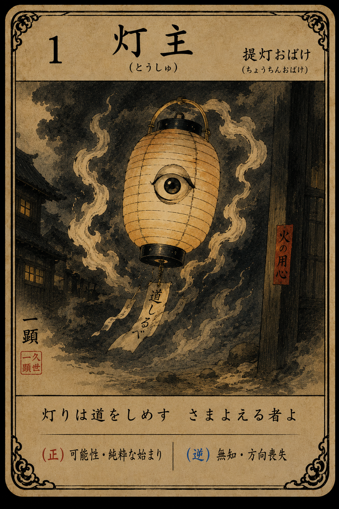
陽：導き・希望の光
陰：依存・見誤り
暗がりの中に灯る光のように、進む方向や気づきを示す象徴です。 自分の中にある希望や直感を頼りに、次の一歩を見つけることを促します。 ただし、誰かの導きだけに頼りすぎれば、自分自身の道を見失うこともあります。
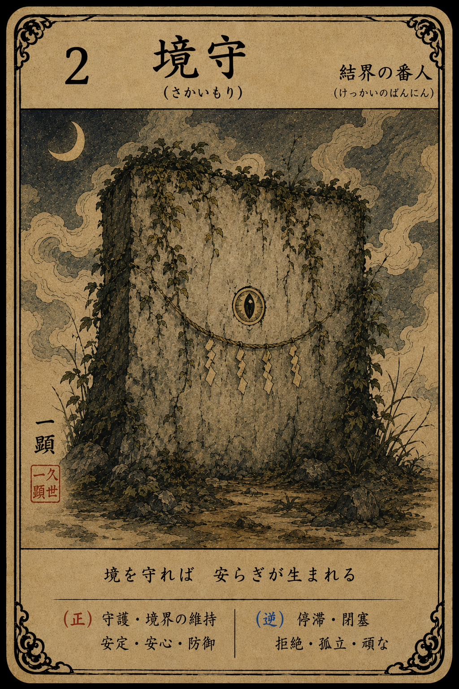
陽：安定・安心
陰：停滞・閉塞
内と外、自分と他者、その境界を守る力を象徴します。 落ち着ける場所や安全な基盤を整えることは、大切な力になります。 しかし守ることにこだわりすぎれば、新しい流れを拒む壁になることもあります。
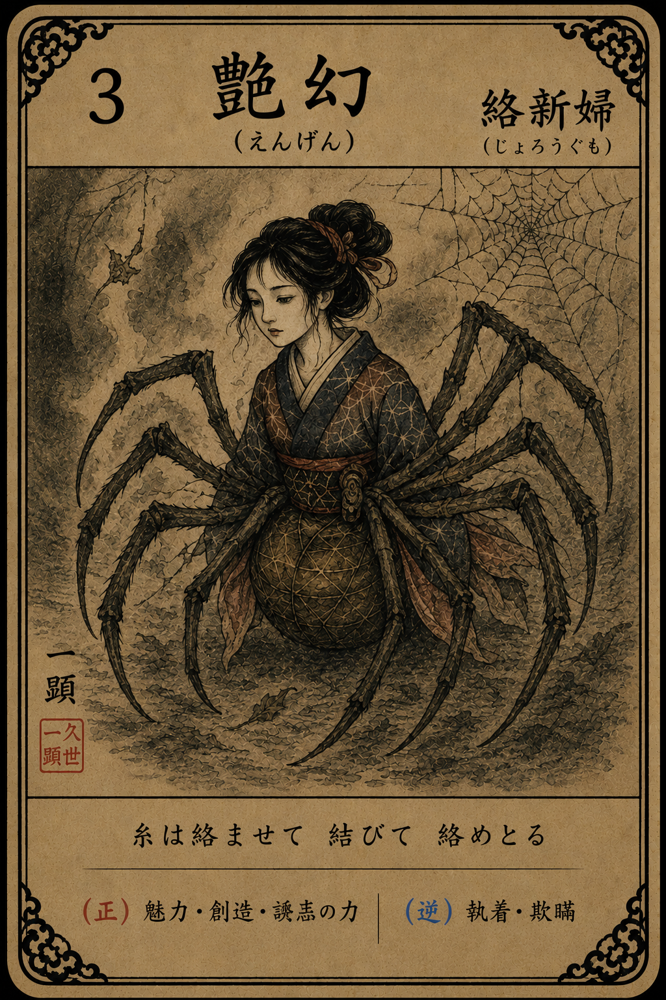
陽：魅力・創造・誘惑の力
陰：執着・欺瞞
人を惹きつける魅力や、心を動かす創造の力を象徴します。 自分らしい表現や感性を生かすことで、新しい可能性が生まれます。 一方で魅力に囚われすぎると、見たいものだけを見る危うさも表します。
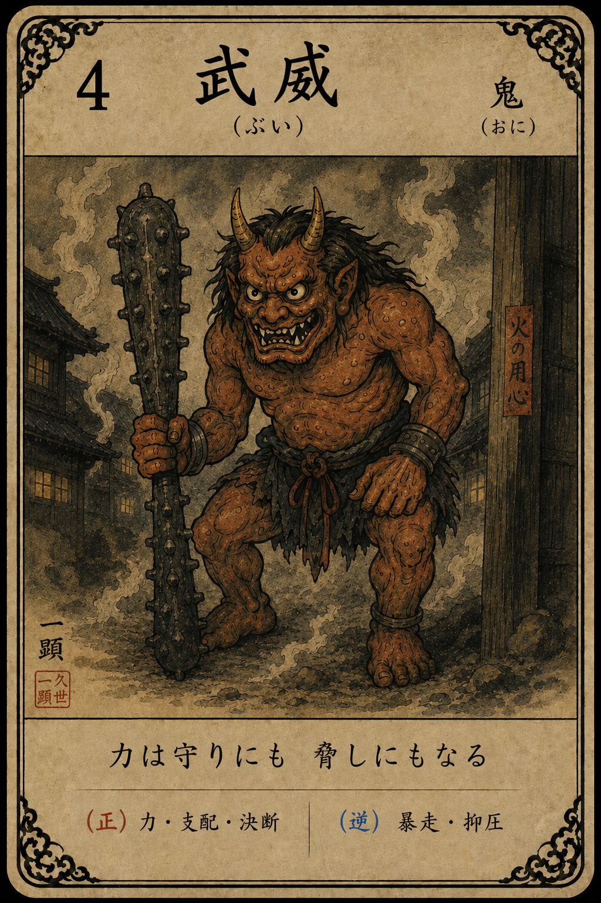
陽：力・支配・決断
陰：暴走・抑圧
物事を動かす力、責任を引き受けて決断する強さを象徴します。 迷いを断ち、自分の意思を形にするときに力を発揮します。 ただし強さが行き過ぎれば、周囲や自分自身を押さえつける力にもなります。
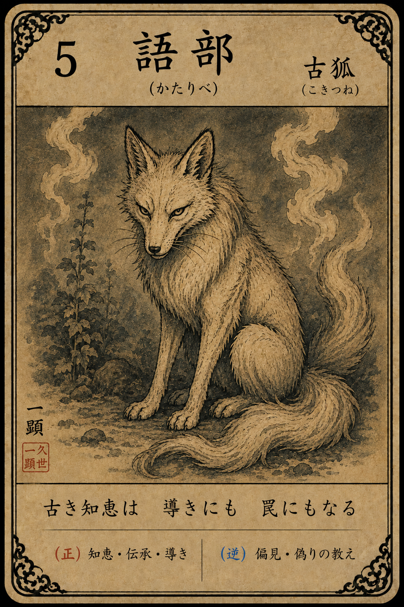
陽：知恵・伝承・導き
陰：偏見・偽りの教え
受け継がれてきた知恵や経験、言葉による導きを象徴します。 過去の教えから学ぶことは、迷いの中で大きな助けになります。 同時に、古い考えを無条件に信じ込まず、自分自身で確かめる姿勢も求められます。
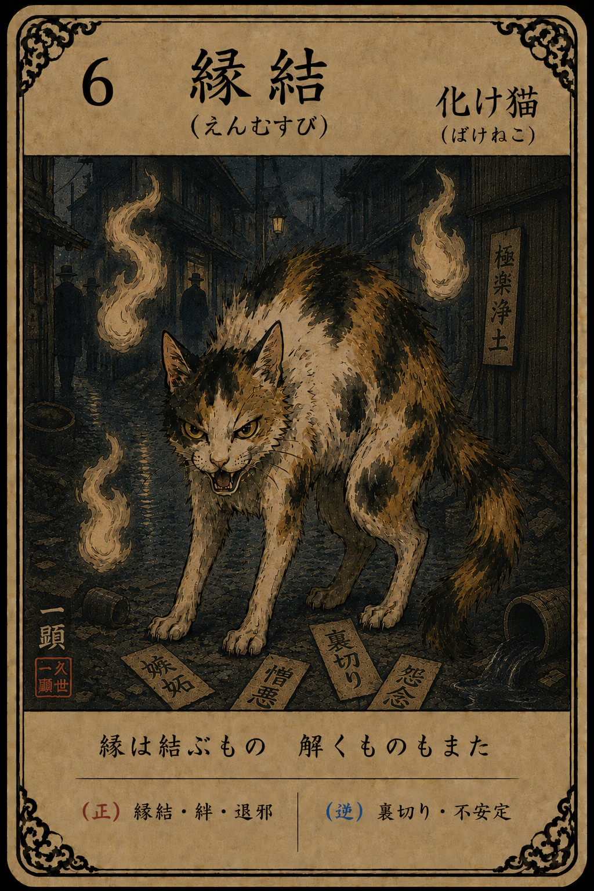
陽：縁結・絆・選択
陰：裏切り・不安定
人と人との縁、出会い、そして関係の中で生まれる選択を象徴します。 縁は偶然だけではなく、互いの選択によって育っていくものです。 気持ちが揺れているときには、何を大切にしたいのかを見直す必要があります。
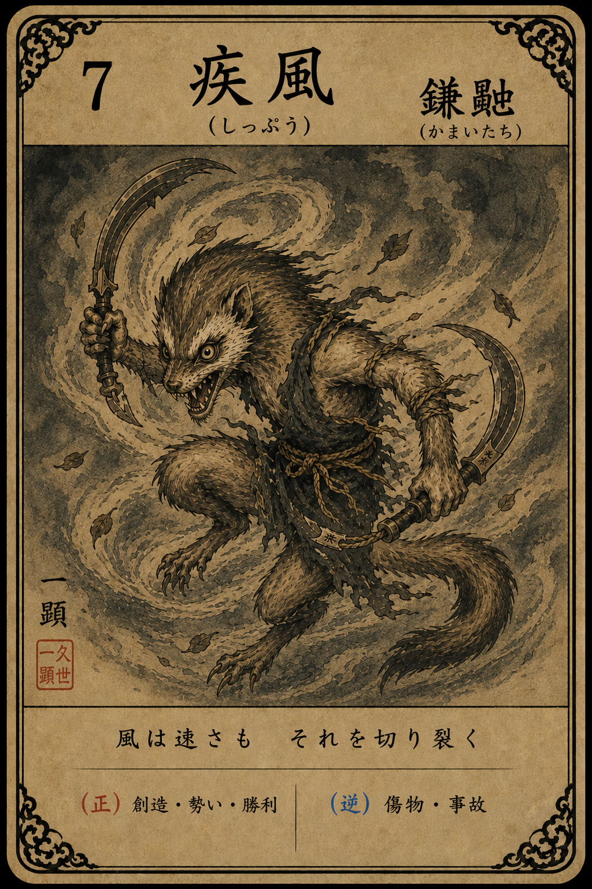
陽：創造・勢い・勝利
陰：負傷・事故
風のように一気に進む勢いと、状況を切り開く行動力を象徴します。 好機をつかむには、思い切って動くことが必要な場合もあります。 ただし速度ばかりを求めると、周囲が見えなくなる危険も忘れてはいけません。
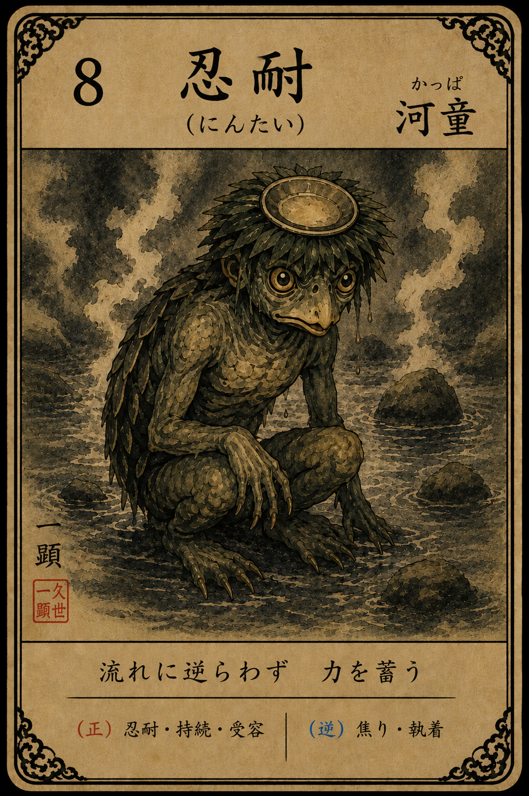
陽：忍耐・持続・受容
陰：焦り・執着
すぐに結果を求めず、流れを受け入れながら力を蓄えることを象徴します。 続けることそのものが、大きな力になる時があります。 一方で、待つことへの焦りや、結果への執着が強くなっていないかを問いかける札でもあります。
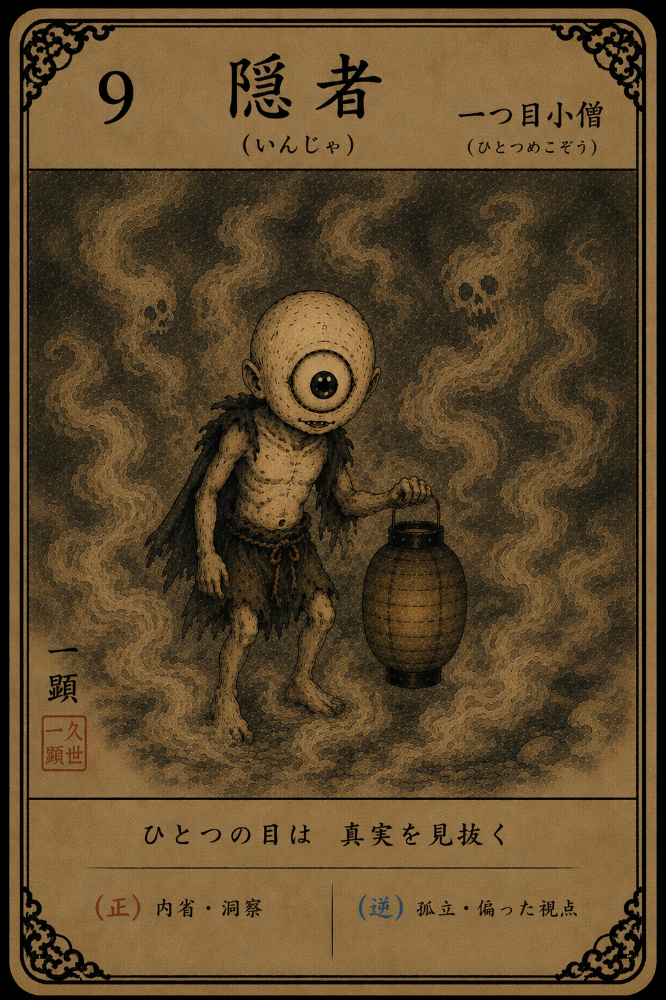
陽：内省・洞察
陰：孤立・偏見
外の声から少し離れ、自分自身の内側を見つめる時間を象徴します。 静けさの中だからこそ見えてくる答えがあります。 ただし一人で考え続けることで、視野が狭くなっていないかにも注意が必要です。
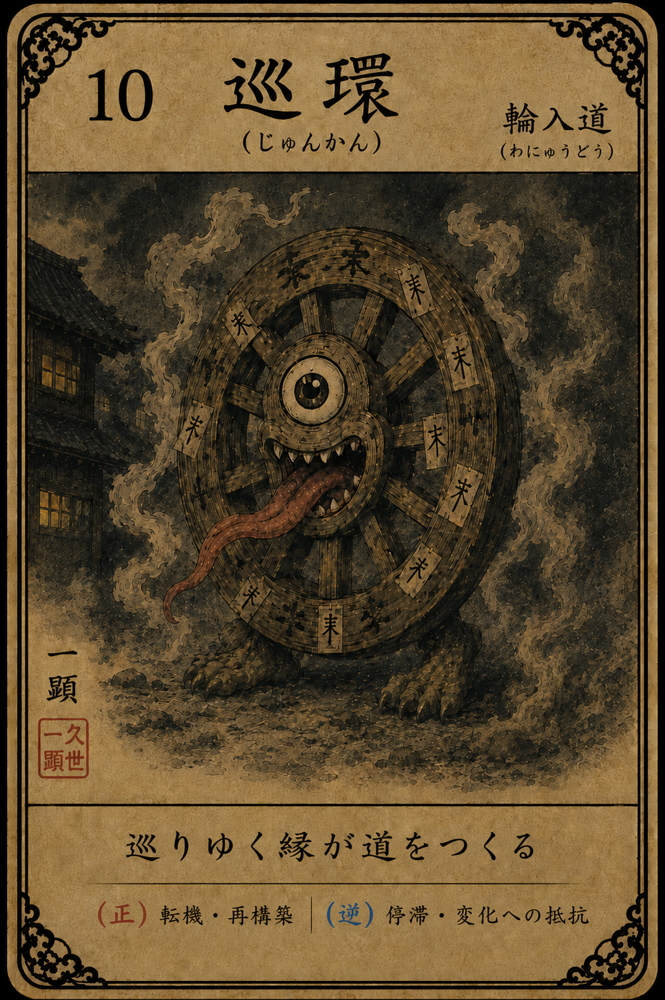
陽：結果・再構築
陰：停滞・抵抗
終わったものが別の形で始まり、出来事が巡っていく流れを象徴します。 これまでの経験を材料に、次の形へ組み直す時です。 変化に抵抗し続ければ、同じ場所を巡り続けることもあります。
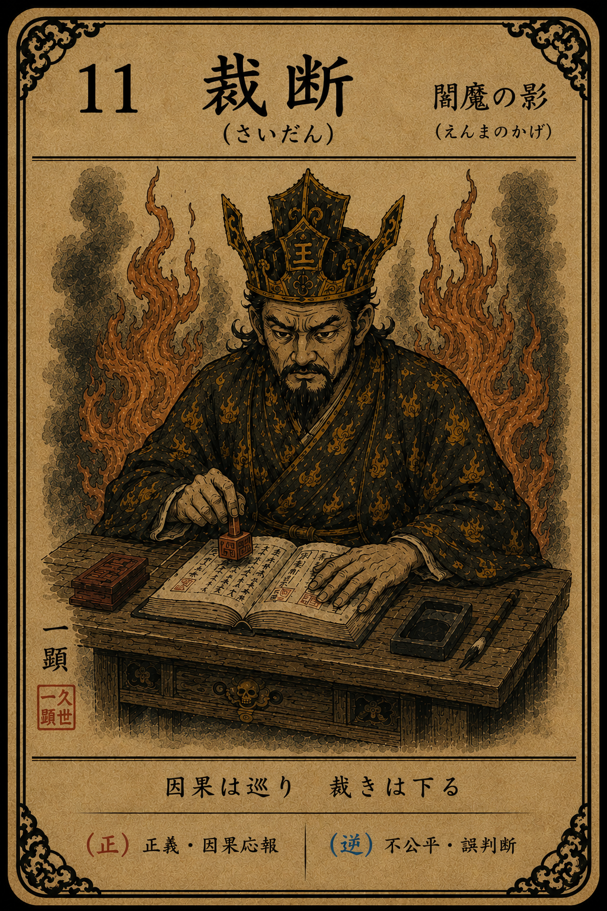
陽：正義・因果応報
陰：不公平・誤断
物事を公平に見つめ、行動の結果を受け止めることを象徴します。 感情だけで判断せず、事実と自分の責任を見極めることが求められます。 思い込みによる決めつけや、偏った判断には注意が必要です。
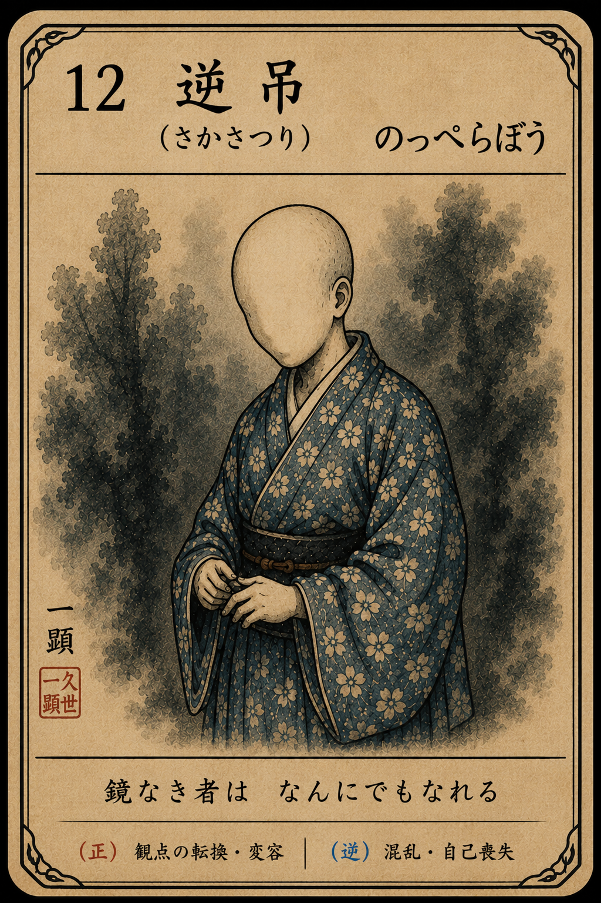
陽：観点の転換・受容
陰：混乱・自己喪失
これまでとは反対の位置から物事を見ることで、新しい意味を発見する象徴です。 すぐに答えを出さず、状況を受け入れて眺め直すことが助けになります。 ただし他人の視点に合わせすぎて、自分自身を見失わないことも大切です。
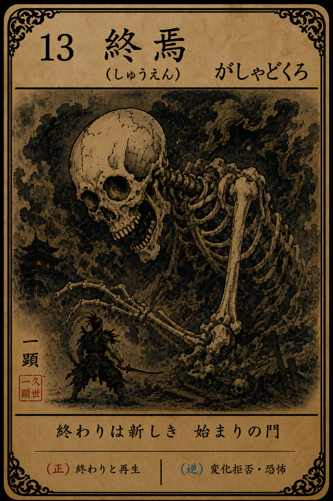
陽：終わりと再生
陰：拒絶・恐怖
一つの流れが終わり、新しい段階へ移るための区切りを象徴します。 終わりは失うことだけではなく、新しいものが入る余白を生み出します。 変化への恐れから、すでに終わったものにしがみついていないかを問いかけます。
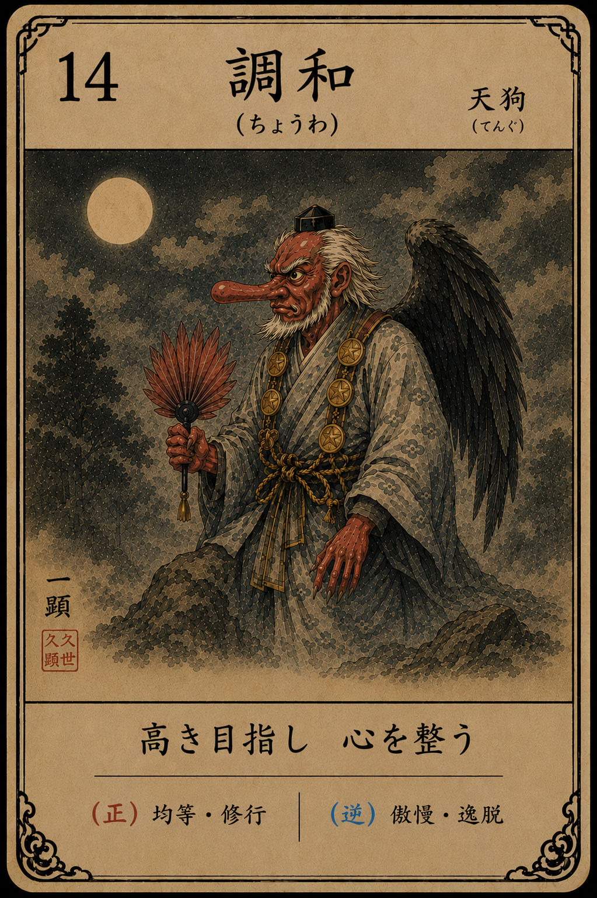
陽：均衡・修行
陰：傲慢・逸脱
異なるもの同士の間に適切な均衡を見つけることを象徴します。 急いで答えを出すより、少しずつ整えていく姿勢が力になります。 自分だけが正しいと思い込むと、せっかくの均衡が崩れることもあります。
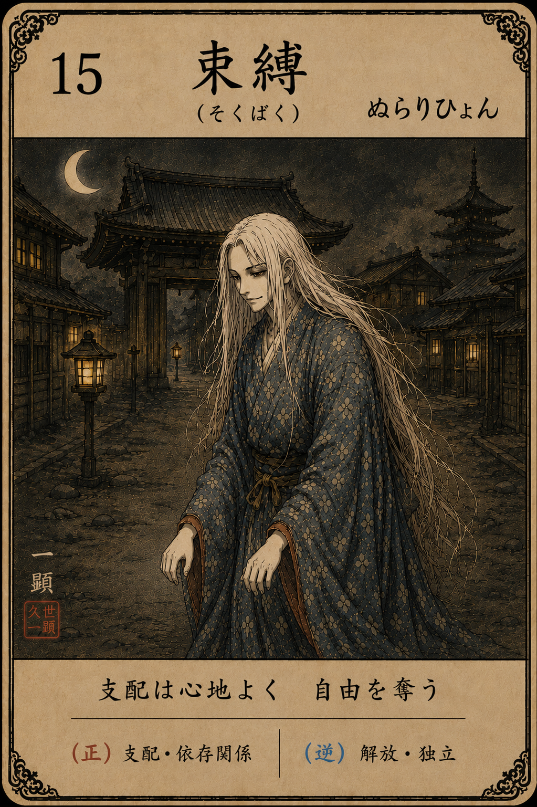
陽：支配・依存関係
陰：解放・独立
人や物、考え方との強い結びつきが、自分を縛っている状態を象徴します。 何に頼り、何から離れられないのかを見ることで、関係の本質が浮かび上がります。 陰では、その結びつきから離れ、自分の足で立つ力が表れます。
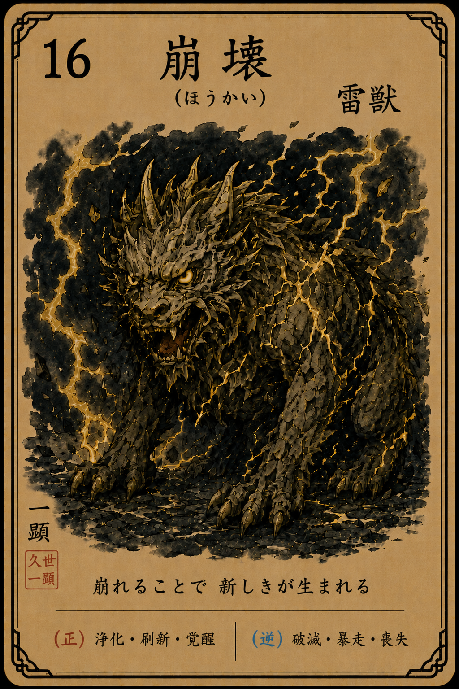
陽：浄化・刷新・覚醒
陰：破滅・暴走・喪失
古い形が崩れることで、新しいものが生まれる転換を象徴します。 突然の変化は不安を伴いますが、不要になったものを手放す機会にもなります。 力が制御できない状態では、変化が破壊や喪失として現れることもあります。
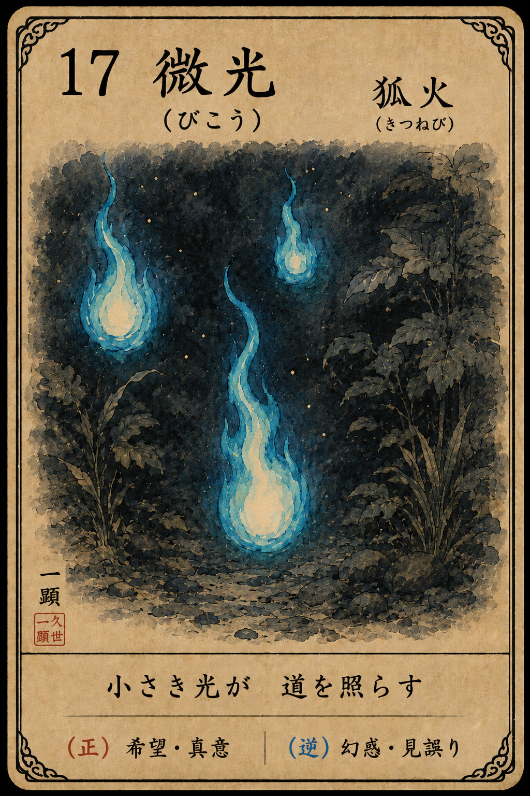
陽：希望・真意
陰：幻惑・見誤り
暗闇の中にかすかに見える光のような、希望や本心を象徴します。 すぐに大きな答えが見えなくても、小さな兆しを大切にすることで道が開けます。 ただし願望を事実と思い込まず、現実を見ることも必要です。
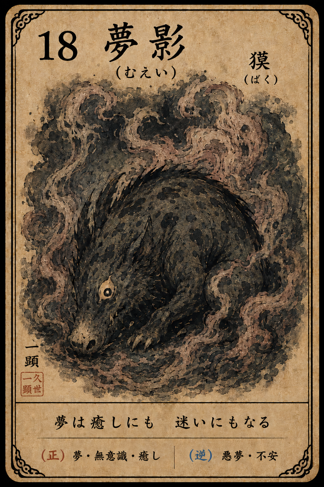
陽：夢・無意識・癒し
陰：悪夢・不安
言葉にならない感情や、無意識の中にある願いを象徴します。 夢や直感を通して、自分でも気づかなかった心の動きが表れることがあります。 不安が膨らんでいる時には、想像と現実を静かに分けて考えることが大切です。
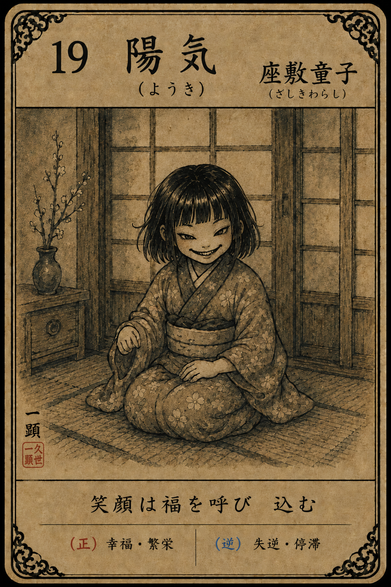
陽：幸福・繁栄
陰：失速・停滞
明るさ、喜び、物事が伸びていく力を象徴します。 今ある恵みを受け取り、自分の成果を素直に認めることを促します。 一方で勢いが落ちている時には、無理に明るく振る舞わず休むことも必要です。
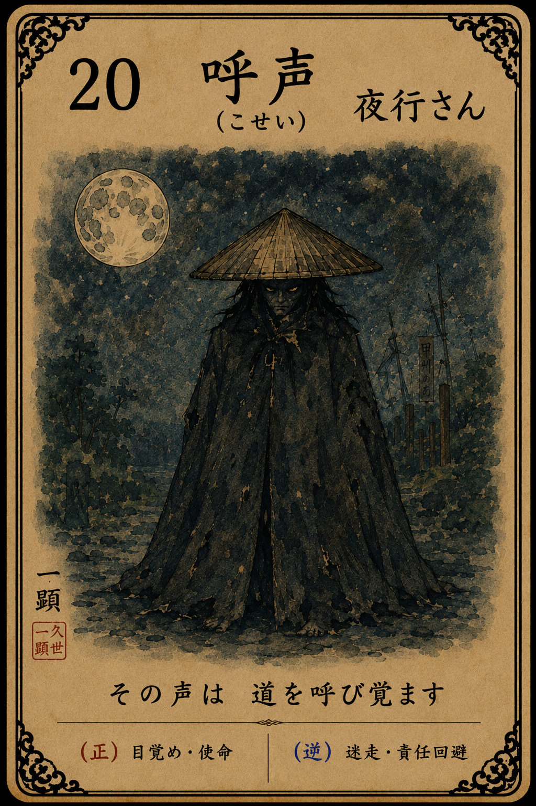
陽：目覚め・使命
陰：迷走・責任回避
自分が本当に向き合うべきものに気づき、行動を始める瞬間を象徴します。 心の奥から聞こえてくる声に耳を澄ませることで、次の役割が見えてきます。 答えを避け続ければ、何を目指しているのか分からなくなることもあります。
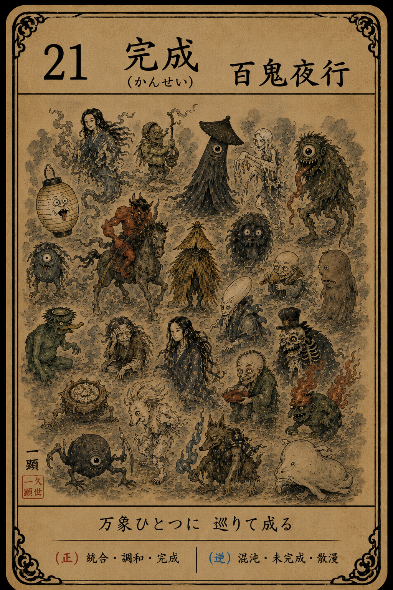
陽：統合・調和・完成
陰：混乱・未完成・散漫
これまで積み重ねてきた経験が一つにつながり、一区切りを迎える状態を象徴します。 完成は終点であると同時に、次の始まりへ向かう場所でもあります。 まだ足りないものがある時は、焦らず全体を見直すことが求められます。
妖怪二十二絵図占術における「陽」と「陰」は、単純な吉と凶を表すものではありません。 一つの力が自然に働いている時もあれば、偏ったり、滞ったり、別の形で表れる時もあります。 同じ妖怪でも、その時の自分の状態によって受け取る意味は変わります。
占い結果を未来の断定として受け取るのではなく、 「今、自分は何を感じているのか」「何を見直せるのか」を考えるための一つのきっかけとしてお楽しみください。